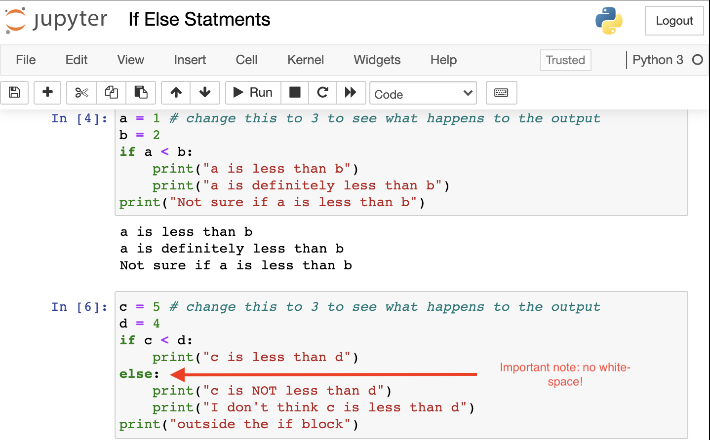
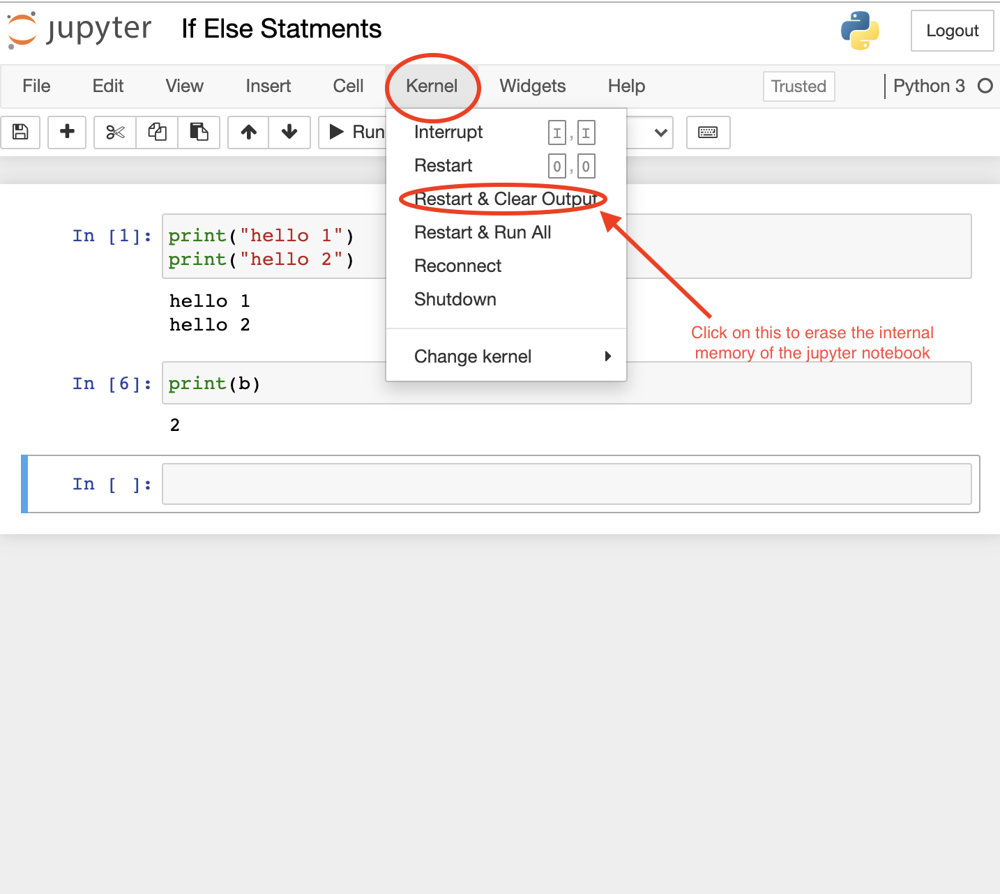

Chapter 2 Foundatios of Programming
2.1 How to Program?
In dieser ZF, werde ich mit Hilfe des Youtubers The Coding Train versuchen, meine Programmierkenntnisse zu erweitern.
2.2 Tools to get started
- Download the Program Processing: The Coding Train uses this to make all of his example. The programming language of Processing is Java.
2.3 Wörterbuch
2.3.1 Synonyme
- inputs // arguments
- function // command
- cartesian coordinate system // “normales Koordinatensystem”, dh mit der X-Achse für die horizontale Linie & Y-Achse für die vertikale Linie
- Source // Programming Language (any kind of)
- initialization // declaration // specification
- dependencies // Abhängigkeitsprobleme
- fetch data // retrieve data
- cache data // store data in the computer’s memory (for future use)
- Rest API // Restful API
__init__// Custom-Constructor // Initialisierungs-Methode- Taxonomie // Framework // (“State-of-the-Art”) Methodik // Systematik // Vorgehensweise
2.3.2 Programming
- What is an Algorithm?: An Algorithm is a list of instructions.
- What is Programming about?: Programming is not about hardcoding numbers into functions to create a picture. Programming is about creating a sequence of instructions (= a logic) to execute a task.
- What is a Command & what are arguments?:
The command is the function as a whole, while arguments are the inputs of a function // command
- The coordinate system of a computer VS. the coordinate system in mathematics?:
The y-axis of a computer goes down starting the top-right corner, while the x-axis goes to the right starting the top-right corner
- What is an Array?: An
Arrayis a List of Data. In aDataFrame-Object, you can think of acolumnOR arowto bearrays. It is a data structure, which containsN-objects within a list.- Quelle: The Coding Train 3:10-3:22
- What is an
IDE?- Abkürzung:
IDE== Integrated Development Environment - Definition: An integrated development environment (IDE) is software for building applications. It combines common developer tools into a single graphical user interface (GUI).
- Example: R, PyCharm oder Visual-Studio Code are all IDEs. Think of it as a modern Dream Weaver! :)
- Abkürzung:
- What are Dependencies?: Das sind Probleme, die mit den Versionen der eingesetzten Packages - welche du in einem DS-Projekt verwendest - zu tun haben. Die Lösung wäre der Einsatz von einem
Virtual Environment(oder ein Docker-Container).- Beispiel, dass das Problem beschreibt: Du machst eine Datenanalyse und verwendest zum Zeitpunkt “t” bestimmte Versionen dieser Packages. Nun vergeht jedoch über 1 Jahr und du möchstest das Modell wieder zum laufen bringen, welches du damals konstruiert hattest. Ausserdem verwendest du dabei einen anderen Computer. Mit einem Memory-Stick überträgst du das Modell auf diesen neuen Computer. Allerdings funktioniert das Modell nicht mehr. Nach etlichen Recherchen findest du heraus, dass dein neuer Computer eine ge-updatete Version eines Package verwendet, welches du für deine Analyse benötigt hast. Dieses ge-updatete Package war allerdings nicht kompatibel mit einem anderen Package, das du ebenfalls für die Analyse benötigt hast. Es bestand also ein “unsichtbares” Abhängigkeitsproblem, was der Grund war, weshalb dein Modell auf dem neuen Computer nicht ge-runt hat!
- Remote: Das ist z.B. ein Server / eine Maschine, die du nicht lokal bedienst.
- instanziieren: Das Erzeugen eines Objekts in der objektorientierten Programmierung.
- Specification: This is the assignment of an initial value for a data object or variable. Dieser Schritt passiert gleich nach einer Instanzierung einer Variablen (siehe vorheriger Listenpunkt).
- Example in another Context: Plugging in some values, in order to get a prediction from an estimated model.
- Self:
selfrefereziert den Zustand eines Objektes in Python –> dieser kann durchmethodsverändert werden.- Beispiel:
### Step 1: initialize a Python-Object 'x' with the class 'LinearRegression'
x = linear_model.LinearRegression # important: this will create an instance of the class!
### Step 2: Now that we have specified a model-type (= linear model), we can estimate a linear regression
x.fit() # <-- THIS LINE IS KEY: "hier" wird der Zustand des Modells verändert!
### Step 3: Make a prediction
x_pred = x.predict(x_test)- Superklasse: Begriff, welcher in der “objektorientierten Programmierung” verwendet wird. Damit ist gemeint, dass eine Klasse von einer anderen Klasse abstammt und dessen Eigenschaften “inherited”.
- Analogie: Das ist dasselbe Konzept, wie ein Parent-Element in
HTML, welcher dieCSS-Styling-Eigenschaften den Kindern vererbt!
- Analogie: Das ist dasselbe Konzept, wie ein Parent-Element in
2.4 Data-Types
In R oder Python ist es wichtig zu verstehen, dass gewisse Funktionen nur dann funktionieren, wenn die Inputs, die wir in die Funktion eingeben wollen, einen bestimmten Data-Type aufweisen müssen.
On the website W3-Schools, I found this extremely good overview of all data-types, which is crucial concept to understand when doing data cleaning.

Overview of different Data-Types
Data-Types are a key-thing to understand. Otherwise, you won’t be able to apply some algorithms on your dataset!
2.5 Global Variables VS. Local Variables
Variables that are created outside of a function are known as global variables.
Global variables can be used by everyone, both inside of functions and outside.
- Example of a global variable:
## Python is awesomeIn contrast, if you create a variable with the same name inside a function, this variable will be local, and can only be used inside the function. The global variable with the same name will remain as it was, global and with the original value.
- Example of a local variable:
x = "awesome"
def myfunc():
x = "fantastic"
print("Python is " + x)
myfunc()
print("Python is " + x)- Output of this: click here
2.6 Python-Basics
- Kernel: The kernel is the command line for a jupyter notebook. It always runs in the background when you run code in the jupyter notebook environment. You can think of it as the terminal on your mac, only that this time, it is for a jupyter notebook. This is how it looks like:

This is the Kernel
Variables: Eine Variable wird mittels dem
=-Zeichen assigned.If-Else Statements: Die If-Else Statements bestehen aus zwei (oder mehr Bausteinen).
- “If-clause”:
This is an If-Clause
2) "Else-clause": ### Magic Commands in Python
Das sind Tastatur-Shortcuts, wenn du Python bedienst. Es hilft dir, schneller & produktiver beim Codieren zu sein.
Mit Hilfe dieser “Magic Commands” in Python, kannst du unglaublich schnell herausfinden kannst, was eine Funktion überhaupt tut UND welche Inputs in eine Funktion gehören.
Hier die Liste:
shift+Tab→ wenn du nicht weisst, was eine Funktion // Method tutTab→ Drücke dieTab-Taste, während sich dein Cursor innerhalb einer Funktion befindet, um eine Übersicht zu allen Inputs der Funktion zu erhalten! xDshift+control+_-Taste → Trennt eine Cell in mehrere, kleinere Cells, je nachdem, wo du den Cursor in der Cell platziert hast. Dieser dient dann als “Flag”, wodurch der Computer weiss: “Aha, hier muss ich die Cell in zwei teilen!”- Wieso?: Dieser Keyword-Shortcut ist nützlich für das Debugging einer langen Funktion. Damit siehst du dann z.B. jeweils, wie lange jeweils eine Cell braucht, um ausgeführt zu werden. =)
shift+M-Taste → Merge Cells, nachdem du eine Funktion debugged hast (mit dem Key-board-Shortcutshift+control+_) =)
2.6.1 Wörterbuch
- What is a “Cell”?: This is the green box which you can write your code into, when you use jupyter notebook:
This is a Cell
- What is “the state” of a jupyter notebook?: To answer this question more precisely, look at this youtube video from 3:50-4:30. You can think of it as the internal memory of the jupyter notebook. You can erase the memory by restarting the kernel by clicking on the button I just marked in the image below:
 - Module: Python-File - PyPA: Python Packaging Authority - PyPI: Python Package Index
2.6.2 Tricks
In den folgenden Zeilen Zeige ich dir, wie Programmierung effizienter geht in Python.
2.6.2.1 Swap the values of two variables
Am besten schaust du dir dieses Youtube-Video ab 19:45-24:00
2.7 R as your IDE
- Write
Markdownfaster: https://thinkr-open.github.io/remedy/- Manage your Short-Cuts (to Code faster): Check out this Youtube-Video, from 2:21-2:51
2.7.1 Pipe-Operator in R
What is the
Pipe-OperatorinRand what does it do?
The Pipe-Operator in R looks like this: %>%. It takes in an input and “transports” it into another function to use the input and produces an output. This verbal explanation can be best illustrated via a code-example in R:
library(tidyverse)
result <- mtcars %>%
group_by(cyl) %>%
summarise(meanMPG = mean(mpg))The Keyboard-Shortcut to use the Pipe-Operator would be: Shift + control + M.
- Quelle: A Guide to the Pipe in R
2.8 Restful API
What are Rest APIs?
Synonym: Restful APIs
Defintion: API stands for Application Programming Interface. It is a way for 2 computers to “talk” // communicate with each other. During the talk, one computer sends a “request”, while the other sends the “response”. How is this possible? In order for you to use an API (e.g. to enable the “talking” between the computers), you need to write code to explicitly “request” data from a server // computer. Most APIs in the world are “restful”, e.g. they follow some set of rules // constraints known as “representational state transfer”, which is the “gold-standard” for API-development since the early 2000’s (invented by Roy Fielding, in its PhD dissertation).
- Example: If you are a “noob”, you can retrieve the NASA-images of asteroids by looking at their websites. However, you could also use NASA’s “Rest API” to get the data via a
.json-file. - How it works?: From a architecture point a view, a Rest API, organizes “data entities” // resources into a bunch of unique URLs. Well, technically speaking, they are NOT URLs, but rather “URIs” (aka “uniform resource identifier”), which identifies exactly each data-resource on the server. A client can then retrieve // get the data about a resource by making a request to the server // “endpoint” (over the “http”-protocol). This request has a very specific format, see this youtube-video (ab 1:03).
- “Stateless” Architecture (key to know): The two parties // computers don’t need to store any information about each other AND every “request-response”-cycle is independent from another “request-response”-cycle. These two characteristics are important, because it leads to an application that is predictable AND reliable.
- Quelle: Pokemon-API
- Example: If you are a “noob”, you can retrieve the NASA-images of asteroids by looking at their websites. However, you could also use NASA’s “Rest API” to get the data via a
Zusammengefasst in meinen Worten: Ein API sind Befehle, die du gibst, um mit einer Datenbank (z.B. auf einem Server) zu kommunizieren ODER ein Package (in R oder Python) zum runnen zu bringen. Ganz einfach xD
Background Client-Server Architecture: most of the applications these days, follow this architecture.
- Client == App itself == Front-End
- Server == Back-End
Communication between the Sever & the Client (= App) happens via API by using the
Http Protocol.- Example: if the App wants to access the particular data of a customer, it sends a request to the server via http-protocol.
So, when does the
Rest APIcomes into play? –> the Rest API is a standard that established itself in the industry, when communaction between client & server –> these are theCRUD Operations, which are by definition:GET== getting the data from the serverPOST== creating dataPUT== updating dataDELETE== deleting data
2.8.0.1 API Example
Beispiel eines
APIin Python?
Das Modul // Package sktime verwendet einen ähnlichen API, wie die berühmte Machine-Learning sklearn-Library. Hierbei wäre der Programmierer (= Du) als Forecaster verstanden, welcher via sogannten methods (zum Beispiel die fit-method, um das Modell zu trainieren // estimaten) mit der application (= hier: Python) interagiert.
2.9 More advanced Topics
2.9.1 Data Pipeline
Was ist eine
Data-Pipeline?
After streaming your data (in real time) // downloading your data from a provider, it’s basically a way to automate the process of data cleaning in order to be able to get the plots // models from your “dirty data” in a fraction of the time you would spend, if you would do the data cleaning “by hand” yourself.
- Youtube-Video: What is a Data-Pipeline?
2.9.2 Fundamental-Daten
Was versteht man unter
Fundamental-Daten?
Fundamental-Daten sind effektiv messbare Daten, die über Datenbanken accessible sind und welche als Proxy - beispielsweise in Regressions-Analysen - verwendet werden können.
2.9.3 Data-Flow
Was versteht man unter dem
Data Flow?
Mit dem Data Flow sollen folgende Fragen beantwortet werden:
- Welche Daten werden wo geholt & wieso?
- Wie werden die Daten anschliessend verarbeitet?
- Was ist der End-Output, nachdem die Daten - beispielsweise - in einem ML-Modell verwedet wurde?
Zur Illustration des Data Flows, gab es hierzu im Wissensaustausch auch eine Bild:

Beispiel zum Data Flow
2.9.4 Docker
Was ist
Dockerund was ist der Vorteil davon?
Docker wird verwendet, um ein Virtual Environment zu bilden, welches - wie ein Container - dir punktgenaue Versionen von bestimmten Packages und Programmiersprachen (Python etc.) liefert.
Docker läuft über Open Shift, welches eine Art Management-Programm für Docker ist (so viel ich das verstanden habe…).
2.9.4.1 Definitions
Image- An image is an environment that has been built from a series of instructions called aDockerFile. Images can be prebuilt and hosted onDockerHub(similar to how GitHub hosts version controlled software files). The image is needed to run a Docker Container.Container- A container is a virtual environment that combines a Docker Image with software (files) to run an application in a controlled environment (a reproducible software environment created virtually from the Docker Image).DockerHub- An online community for storing and sharing container images. Has Public and Private repositories for image storage. It’s basically a Cloud, like Github.Fazit: DockerFile –> Docker Image (can be pre-built and hosted on the DockerHub-Cloud) –> Docker Container